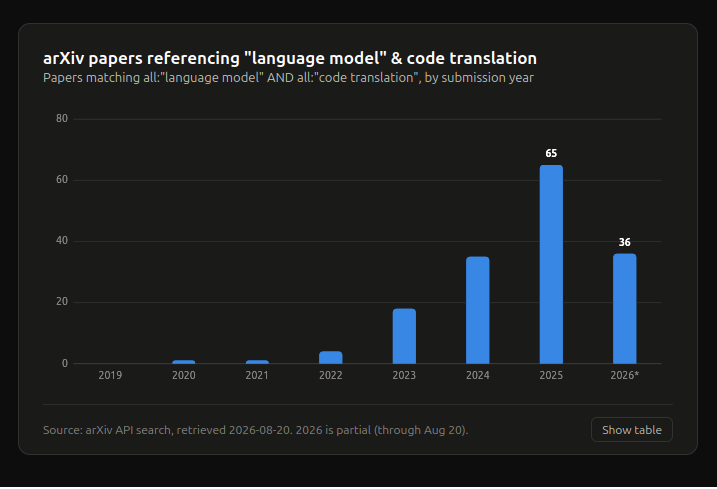

Using Large Language Models and Coding Agents to Translate Stata Packages: Benefits and Risks

Stephen Thompson
UCL Centre for Advanced Research Computing and UCL Innovative Clinical Trials Unit
2026-09-04
Today’s Talk
- Brief Introduction (Talk/Stephen/Toby)
- Background (Collaboration with Clinical Trials Unit)
- Code Translation Motivation
- Code Translation Mechanics
- Workshop Results and Next Steps
Introduction: Stephen
- Senior Research Software Engineer Since October 2023
- Background in augmented reality for keyhole surgery.
- Mostly Healthcare projects: informus, education, EMAP, sense-base.
- Special interest in game development for healthcare - Astrobalance.
Background - ARC Collaboration with ICTU

- World leaders in clinical trial design
- Robust/tested statistics to support clinical trial design
- 2nd Floor of 90HH
ARC / ICTU Collaboration
- Multiyear funding for ARC to support ICTU to improve code quality and sharing.
- Outputs:
- “Using Large Language Models and Coding Agents to Translate Stata Packages: Benefits and Risks” Stata Con, London, Next Week
- “Code Translation using Large Language Models: What’s the role of the Research Software Engineer?” RSE Con, September 2026
Motivation - Stata Translation
- Stata - commercial (closed source) statistical analysis software
- economics, sociology, health
- Researchers can publish bespoke packages.
- Stata journal enforces testing/documentation etc.
- Compared to Python or R the software impact is limited.
- Can we increase software impact by translating to other languages?
Motivation Stata and R (Citation Metrics)
- R Journal Impact (Scimago Journal Ranking: 0.483) (H-Index 71)
- Stata Journal Impact (Scimago Journal Ranking: 1.699) (H-Index 123)
Motivation Stata and R (Software Metrics)
- Stata Language on GitHub 18.4K repositories ~ median 6 stars
- High impact Stata packages reghdfe 248 stars, ietoolkit 244
- R Language on GithHub 1.1M repositories ~ median 313 stars
Motivation Stata and R - Creating Impact
- Conclusion. Translations;
- may not have big impact on paper citations.
- likely to increase the software impact (re-use, contributions, maintenance) of your software.
Stata2R: Practicalities
- Pre-requisites:
- Well written/documented/tested Stata code 👍
- Language Expertise (Stata and R)
- Domain Expertise (Statistics)
- Time (funding)
- Can we leverage advances in agent based code translation?
Rapidly growing work on code translation using language models.

Stata2R: Practicalities
- Resources:
- Departmental subscription to Claude Code.
- Approx 4 weeks RSE time.
- Plan:
- Research Code translation.
- Develop method -> A Claude Plugin.
- Develop HowTo for Statisticians.
What’s in a plugin
A plugin is a collection of Skills
└── skills
├── add-missing-tests
│ └── SKILL.md
├── add-stata-tests-r
│ └── SKILL.md
├── hello
│ └── SKILL.md
├── pseudocode-to-r
│ ├── assets
│ ├── references
│ │ └── language_mappings.md
│ └── SKILL.md
├── run-stata
│ └── SKILL.md
├── stata-to-pseudocode
│ ├── assets
│ ├── references
│ └── SKILL.md
└── translation-strategy
├── assets
├── references
└── SKILL.md
15 directories, 8 filesWhat’s in a Skill
And easy to install
/plugins marketplace add https://github.com/stata-translations/Stata2R.git /plugin install stata-translation /reload-plugins /stata-translation:hello
Run as an interactive workshop
Developed and delivered a Workshop to around 10 statisticians. Aims:
- Teach them how to use Claude to translate code.
- Leverage their skills to help understand how well Claude works.
Results: Brief
- Claude can translate code and appears to give sensible results.
- Participants were generally happy and eager to pursue this further.
- Statisticians take the accuracy of the software very seriously.
Pre-Workshop: Current Roles
Pre-Workshop: Stata Fluency
Pre-Workshop: Stata and R Fluency
Pre-Workshop: Language Correlation
Pre-Workshop: Expectations Word Cloud
Post-Workshop: Concerns Work Cloud
Post-Workshop: Ideas for Improvements / Future Work.
Post-Workshop: Skills assessment (analysis).
Post-Workshop: Skills assessment (infrastructure).
Post-Workshop: Skills assessment (interaction required).
Post-Workshop: Skills assessment (pseudocode).
Post-Workshop: Skills assessment (reliability).
Post-Workshop: Skills assessment (target language quality).
Post-Workshop: Skills assessment (testing quality).
Post-Workshop: Skills assessment (Time Taken).
Post-Workshop: Skills assessment (Documentation Quality).
Post-Workshop: Workshop Quality
Summary
- Claude can translate code.
- The plugin provides some structure, but human intervention is still required to keep Claude on track.
- Translation depends on documentation and testing as well as source code quality.
- Results are non deterministic.
- Future work: Publish to CRAN.
With thanks to:
Asif Tamuri, James Carpenter, Matthew Burnell, David Fisher, Babak Choodri-Oskooei, Matteo Quartagno, Becky Turner, Tra My Pham, Guilio Scola, Michelle Clements, Ian White, Samina Begum, Henry Bern, Akshay Jagadeesh, David Perez-Suarez, Haroon Chughtai, and Toby.